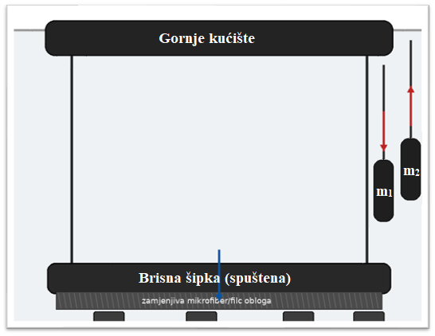
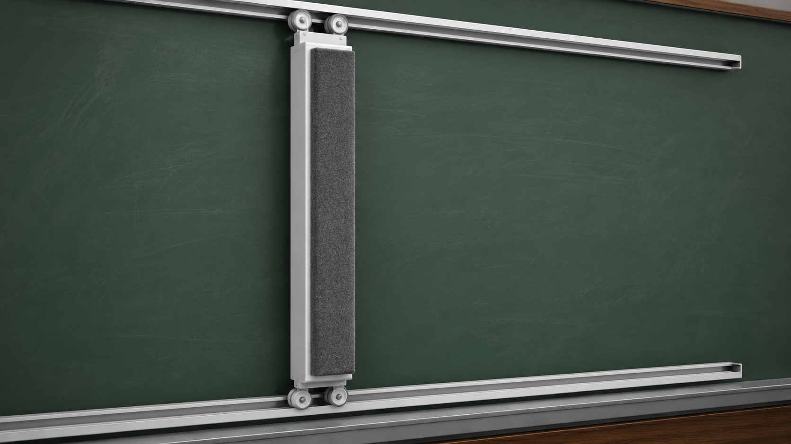
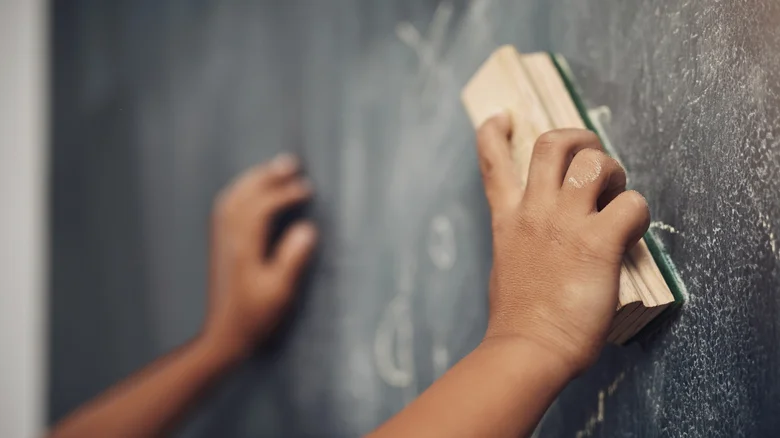
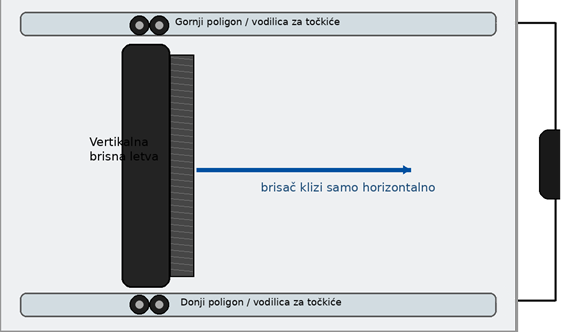
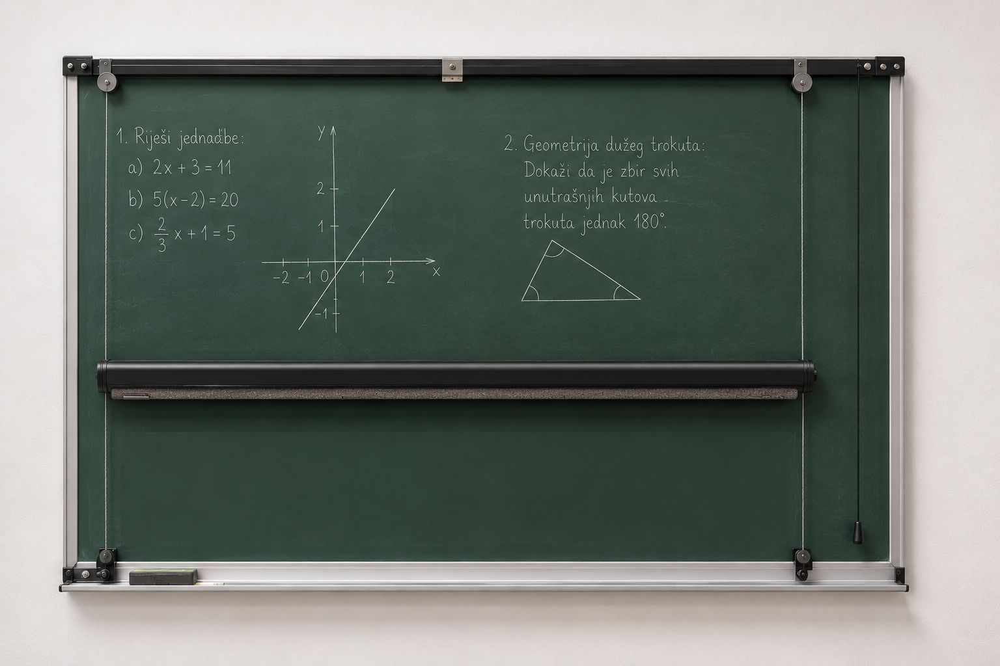

Vertikalna izvedba
Brisna šipka se spušta i podiže po visini table. Pogodna je za prikaz rolo-koncepta.
Inovativno rješenje za moderne učionice
Tabula Rasa je praktičan mehanički brisač table koji omogućava brzo, ravnomjerno i jednostavno čišćenje površine bez nepotrebnog nereda.

Zašto je potreban proizvod?
Postojeći način brisanja školskih tabli nije u potpunosti efikasan, jer često dolazi do zadržavanja tragova pisanja, stvaranja prašine i neravnomjernog čišćenja površine. Ovakvi nedostaci utiču na preglednost table, higijenske uslove u učionici i kvalitet nastave.

Naša solucija
Tabula Rasa olakšava svakodnevni rad u učionicama tako što omogućava brzo, ravnomjerno i jednostavno brisanje table jednim potezom.
Posebno se ističe horizontalna izvedba, kod koje se brisna letva pomjera po vodilicama pomoću kotačića. Time se postiže stabilno i precizno kretanje preko površine table.
Jedan potez pokriva veliku površinu table.
Korisnik samo povlači sistem lijevo-desno.
Smanjuje se prašina, tragovi i neravnomjerno brisanje.
Efikasnost
| Karakteristika | Klasično brisanje table | Tabula Rasa |
|---|---|---|
| Brzina brisanja | Sporije, više poteza rukom | Brisanje jednim potezom |
| Ravnomjernost čišćenja | Često ostaju tragovi | Ravnomjerno čišćenje površine |
| Fizički napor | Veći napor pri svakom brisanju | Minimalan napor korisnika |
| Prašina i nered | Veće rasipanje prašine | Smanjeno rasipanje prašine |
| Praktičnost | Potrebno stalno ručno brisanje | Jednostavno povlačenje sistema |
Princip rada

Brisna letva se kreće lijevo-desno po gornjoj i donjoj vodilici. Oslonjena je na male kotačiće koji se kreću unutar U/C-kanala, zbog čega ostaje stabilna i ne iskače iz putanje.
Ova izvedba ne koristi uže, teg ni koloture. Zasniva se na principu kotačića u vodilicama, slično dječijoj magnetnoj tabli.
Izvedbe

Brisna šipka se spušta i podiže po visini table. Pogodna je za prikaz rolo-koncepta.
Brisna letva se pomjera lijevo-desno po vodilicama pomoću kotačića. Najbolja je za prvi mini-prototip.
Marketing
Tabula Rasa predstavlja inovativno i praktično rješenje za učionice, škole i edukacijske centre. Savremenim minimalističkim dizajnom i jednostavnim mehaničkim principom rada omogućava efikasno čišćenje table uz minimalan fizički napor korisnika.
Vizija za budućnost
U narednoj fazi projekt bi se mogao implementirati kao napredniji sistem za automatsko brisanje table, sa mogućnošću samostalnog pokretanja i zaustavljanja.
Buduća verzija mogla bi uključivati elektromotor, dugme za aktivaciju, senzore krajnjeg položaja i automatsko vraćanje brisača na početnu poziciju.
